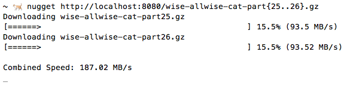

nugget
Minimalist command line downloader written in node, inspired by wget. HTTP GETs a file and streams it into a file in the current working directory. Specializes at downloading many files in parallel.


installation
npm install nugget -g
usage
Usage: nugget <urls> [options]
-o output filename
-d output parent directory
-c resume aborted download
-f ignore response codes > 299
-s concurrent socket limit (default infinity)
-q disable logging
examples
nugget http://foo.com/bar.jpg
# downloads bar.jpg and stores it in the current directory
or
nugget http://foo.com/bar.jpg -O baz.jpg
# saves it as baz.jpg. you can also do lowercase -o
if you get a statusCode of 300 or greater nugget will stop. you can force it to stream the response into a file anyway by doing nugget http://404link.com/file.html -f or --force works too
you can also download multiple files, just pass multiple urls:

options
The following options are recognized by nugget:
-s|--sockets- default Infinity. specify the number of http sockets to use at once (this controls concurrency)-o|-O|--out- specify the filename to write to. this only works if you are downloading a single file-d|--dir- save files in a directory other than the current one.-c|--continue- resume downloads if a partially complete target file already exists. If the target file exists and is the same size as the remote file, nothing will be done.-f|--force- force the server response to be saved to the target file, even if it's a non-successful status code.-q|--quiet- disable logging--no-strict-ssl- disable strict ssl--proxy- specify a proxy to use